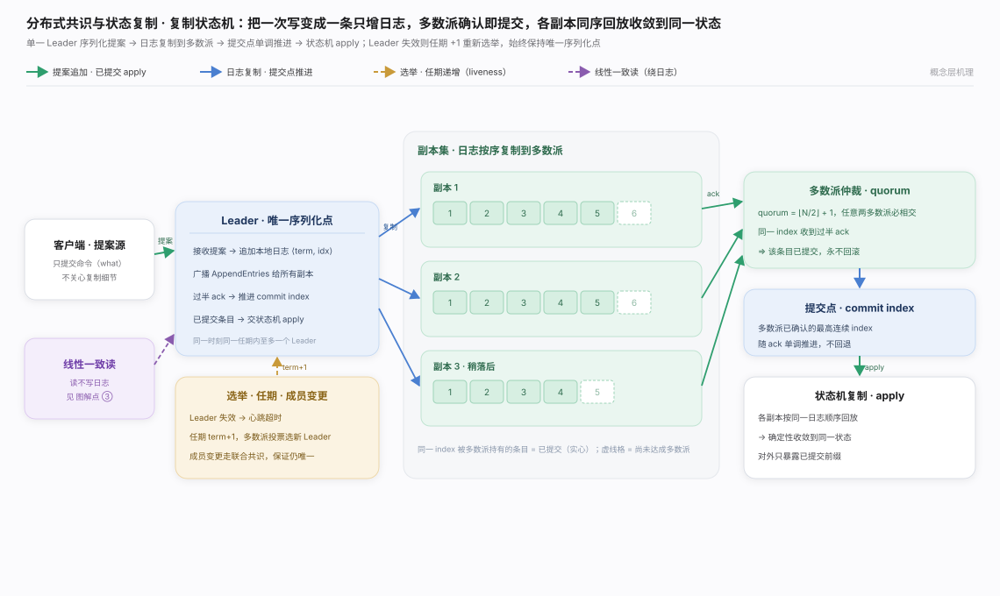
分布式共识的根本矛盾：会宕机、消息会丢会乱序的多台机器，如何对「以什么顺序发生了什么」达成一致。骨架是复制状态机——唯一 Leader 作序列化点、条目被多数派确认即永久提交、各副本同序回放；安全性系于「多数派相交」，活性系于选举。分工见生态图。
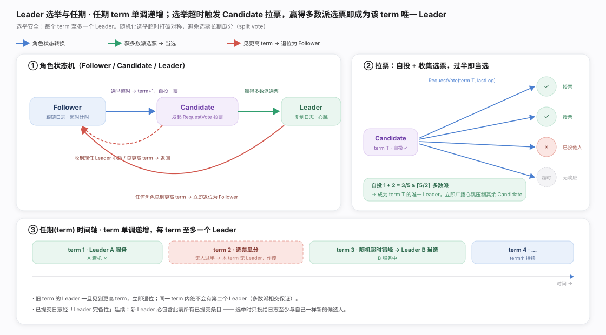
Raft 选举：term 单调递增、每 term 至多一个 Leader，只投给「日志至少和自己一样新」的候选人以保证新 Leader 含全部已提交条目；随机化选举超时错峰防选票瓜分。流程见图。
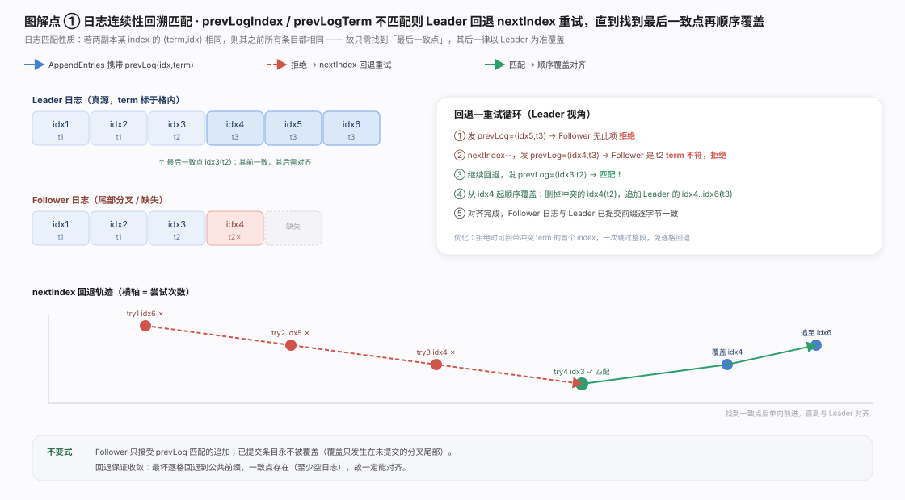
Raft 日志复制：靠日志匹配性质（同 index 处 ⟨term,idx⟩ 相同则之前全同）找到最后一致点，其后以 Leader 为准覆盖——AppendEntries 用 prevLog 试探、不匹配回退 nextIndex。关键不变式：已提交条目永不被覆盖，覆盖只发生在未提交的分叉尾部。见图。
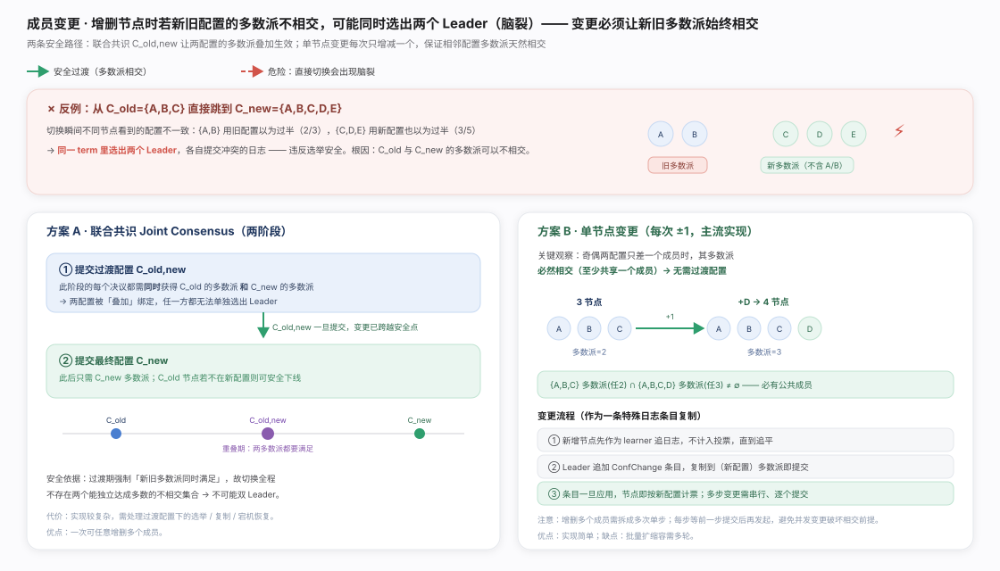
Raft 成员变更：核心风险是新旧配置多数派不相交导致脑裂。联合共识 C_old,new 让过渡期决议同时满足新旧两多数派；单节点变更每次只增减一个成员、相邻配置多数派天然相交,更简单（主流选择）。新节点先作 learner 追平、不计票。见图。
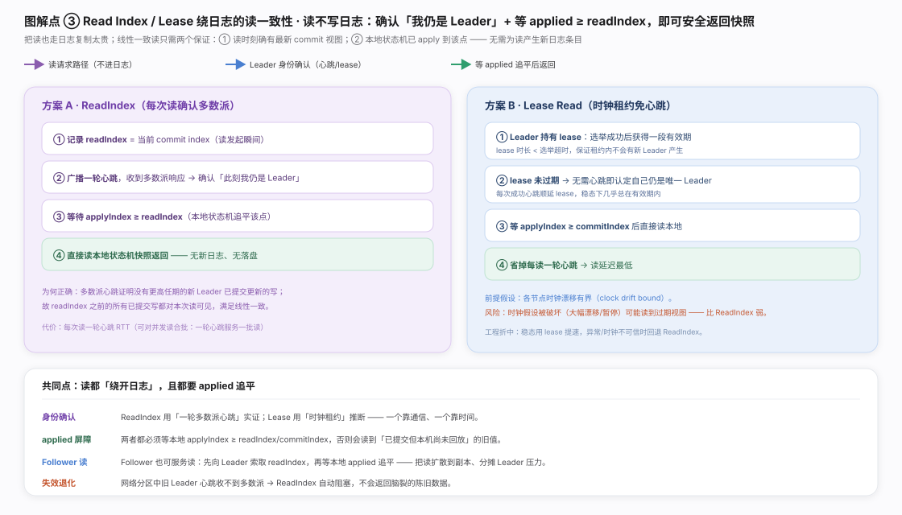
Raft 线性一致读：不写日志。ReadIndex 记下 commitIndex、广播一轮心跳证明领导权、等 applied ≥ readIndex 后读本地；Lease 用短于选举超时的时钟租约免掉每读心跳,依赖有界时钟漂移,不可信时回退 ReadIndex。applied 屏障不可省。见图。
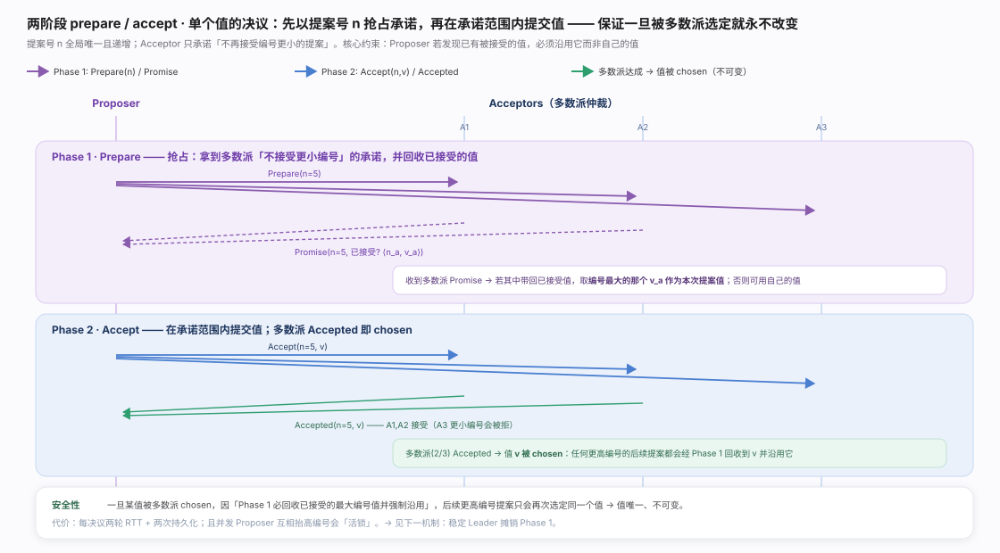
Basic Paxos：两阶段决议单值。Prepare(n) 用全局唯一递增提案号抢占、回收已接受值；Accept(n,v) 在承诺范围内提交,多数派 Accepted 即 chosen。安全性关键：Phase 1 若回收到已接受值,必须沿用编号最大的那个值——故某值一旦被选定,后续更高编号只会再选定同值,值唯一不可变。见图。
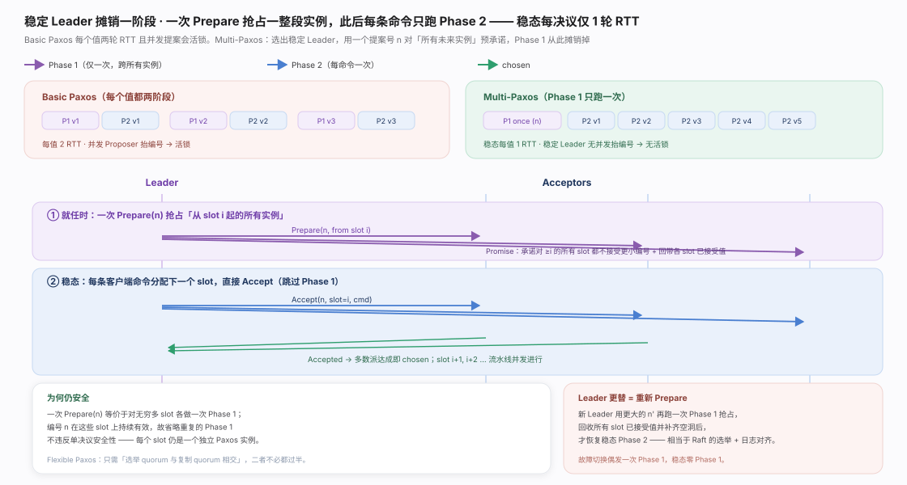
Multi-Paxos：选稳定 Leader、用一次 Prepare(n) 对「从某 slot 起的所有未来实例」预承诺,此后每条命令只跑 Phase 2——稳态每决议仅 1 轮 RTT。每个 slot 仍是独立 Paxos 实例故不违反单决议安全性;Leader 更替相当于用更大 n' 重跑一次 Phase 1 回收补洞。见图。
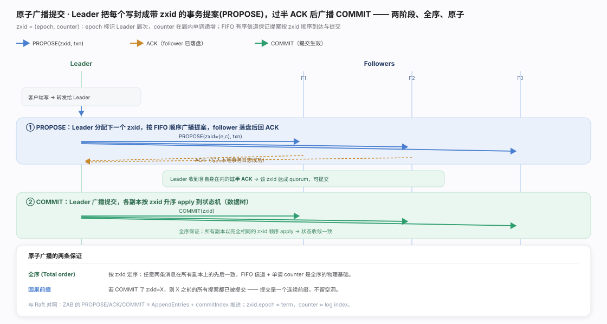
ZAB 原子广播（非日志复制变体）：Leader 把写封成带 zxid 的提案,PROPOSE → 过半 ACK → COMMIT,各副本按 zxid 升序 apply。zxid = ⟨epoch, counter⟩（届次 + 届内单调计数）,FIFO 信道 + 单调 counter 是全序的物理基础,保证全序与因果前缀（提交是连续前缀、不留空洞）。见图。
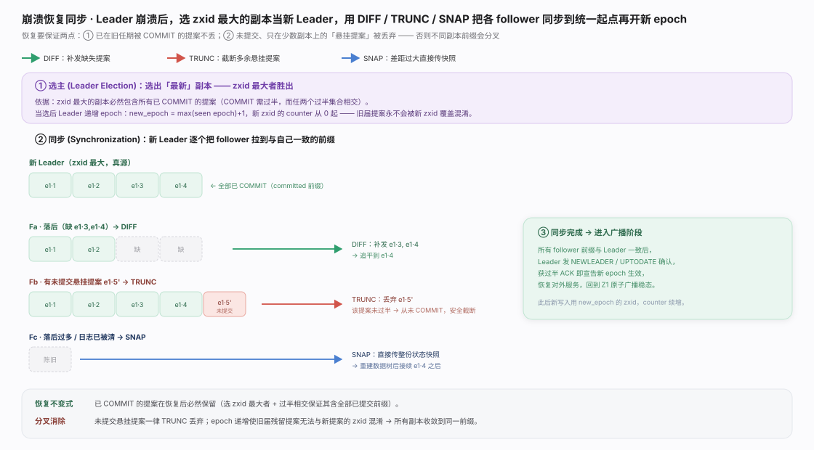
ZAB 崩溃恢复：选 zxid 最大者当新 Leader（必含全部已 COMMIT 提案）,递增 epoch 后用 DIFF 补发、TRUNC 截断悬挂、SNAP 直传快照把 follower 同步到统一前缀。不变式：已提交必保留、未提交悬挂一律丢弃,epoch 递增隔绝旧届残留。见图。
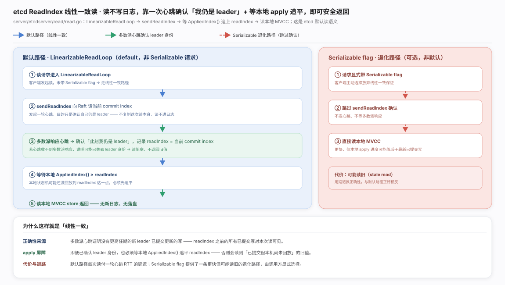
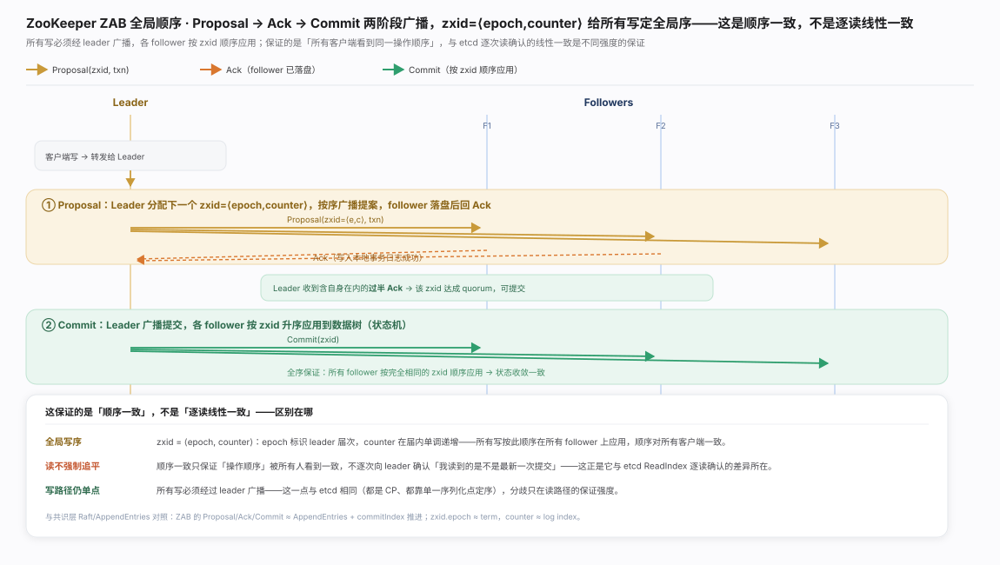
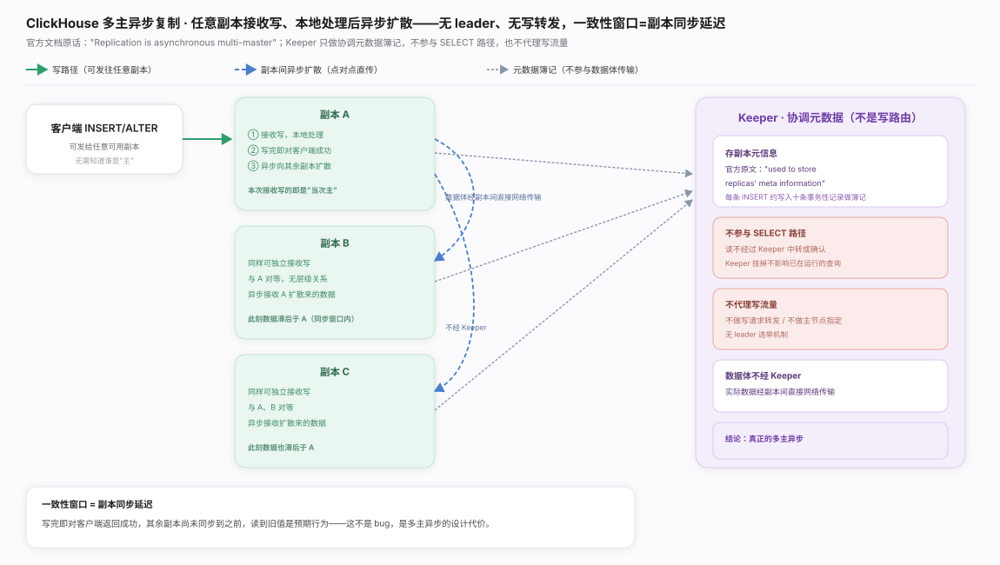
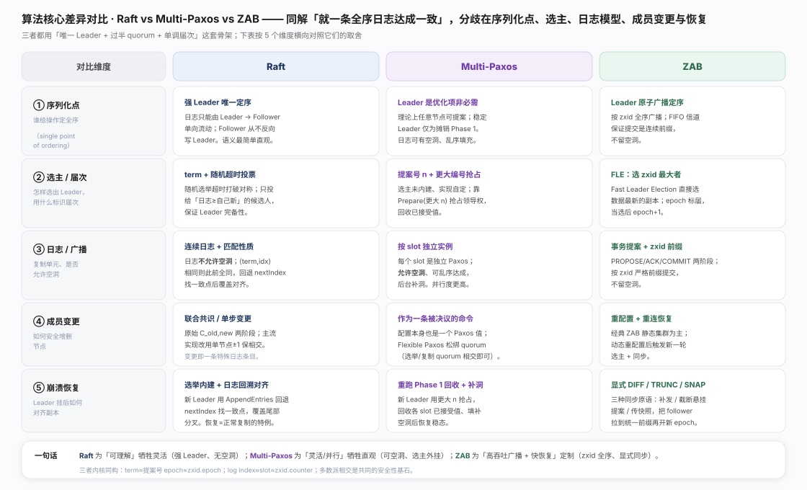
三者同解「就一条全序日志达成一致」,共用「唯一 Leader + 过半 quorum + 单调届次」骨架,分歧在序列化点、选主、日志模型、成员变更、恢复方式五个维度。内核同构：term ≈ 提案号 ≈ zxid.epoch,log index ≈ slot ≈ zxid.counter。一句话总纲：多数派相交是共同安全性基石,差异只是同一骨架的不同工程投影。见图。
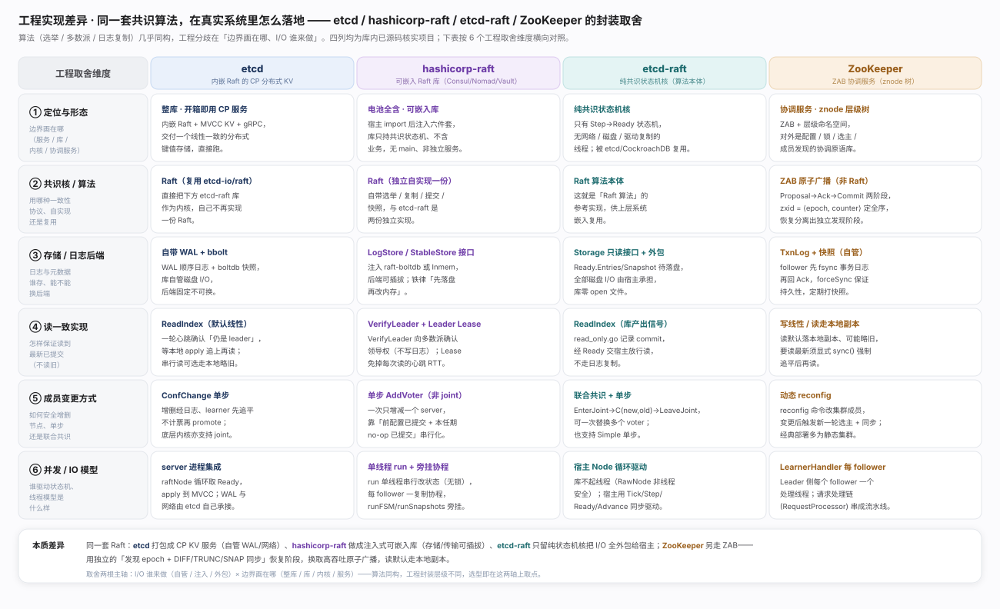
同一套 Raft 落到真实系统被封装成完全不同形态,分水岭不在协议、而在边界画在哪、I/O 谁来做。etcd 把 Raft 内嵌进程、配 MVCC KV + gRPC,交付开箱即用 CP 服务,WAL/boltdb 自管；hashicorp-raft 做成可嵌入库,宿主注入 FSM + 存储 + Transport 六件套；etcd-raft 更极端,只留纯状态机核（Step→Ready、RawNode 非线程安全）,所有 I/O 由宿主外包,故能被 etcd 与 CockroachDB 复用。读一致：etcd/etcd-raft 用 ReadIndex,hashicorp-raft 另提供 Leader Lease。ZooKeeper 不走 Raft 而用 ZAB 原子广播,读默认本地副本可能略旧(sync() 追平),崩溃恢复走独立的「发现新 epoch + DIFF/TRUNC/SNAP」阶段——这是它区别于 Raft「恢复即复制特例」的定义性设计。一句话：算法同构,工程封装层级（服务／库／内核）与 I/O 归属（自管／注入／外包）才是选型的真实分水岭。权威参考：etcd 官方文档 · Learning、etcd-io/raft 源码、hashicorp/raft 源码、ZooKeeper Internals（ZAB）。